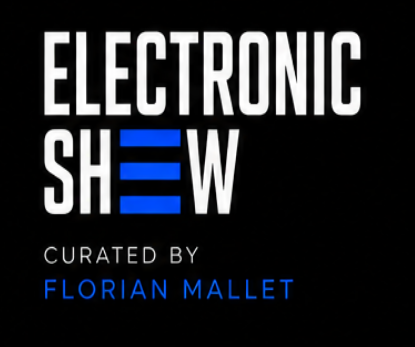

Electronic Show est une émission House & Tech House imaginée et mixée par Florian Mallet. Un projet né de la culture club, des radios underground et d'une passion jamais disparue.
Avant son retour, Electronic Show avait déjà connu une première vie : plus de 150 épisodes, une audience dans 32 pays, puis une longue pause. Aujourd'hui, le projet reprend avec une identité plus mature, plus forte et une énergie résolument club.
Une session House & Tech House orientée club, sélectionnée et mixée par Florian Mallet.
#1 Tech House Chart sur Mixcloud.
#2 House Chart sur Mixcloud.
▶ Écouter sur MixcloudElectronic Show est diffusé un vendredi sur deux sur House Radio London.
21h – 22h UK Time
📻 Écouter House RadioUne série vidéo consacrée aux morceaux, aux artistes et aux histoires qui font vivre la culture House.
Un titre. Une histoire. Un souvenir. Une transmission.
DJ et créateur d'Electronic Show, Florian Mallet revient après plusieurs années loin des platines avec une approche plus personnelle, plus exigeante et toujours guidée par la même envie : partager une House Music sincère, énergique et intemporelle.